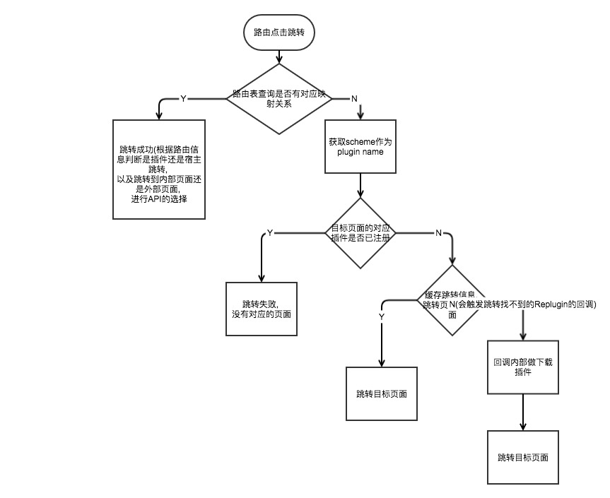

前言
公司有内部开发的路由框架, 为了可适配Replugin插件化框架, 当前的路由框架肯定是不能使用的, 由于项目闭源, 这里主要讲下改造的思路
原路由设计思路以及主要问题
以ARouter为例, 他的设计仅服务于组件化架构项目, 各模块通过APT收集路由信息,APP壳(应用壳)通过反射或者通过TranslateAPI + ASM技术进行动态注册路由映射表, (具体可参考之前的ARouter源码解析)
我们内部的路由大体的设计原理也差不多如上. 显而易见, 当要接入Replugin的时候, 会出现以下几个问题:
Replugin当跨插件调用组件的时候(譬如Activity跳转), 携带的Intent需要设置ComponentName(参见Replugin Wiki 组件的调用), 那么我们在匹配到对应路由的进行页面跳转的时候, 启动方式需要一定的变动.
插件调用插件的组件, 有三种方法
1 | // 插件调用插件的组件 |
宿主调用插件的组件, 必须使用Replugin的startActvityAPI1
2RePlugin.startActivity(MainActivity.this, RePlugin.createIntent("demo1",
"com.qihoo360.replugin.sample.demo1.MainActivity"));
- 由于
Replugin宿主和插件使用不同的ClassLoader, 变相导致插件和宿主的代码级隔离, 所以常用的通过反射or使用ASM获取路由映射表动态注册的方式就无法解决.
一版改造设计思路
原来参考网上的资料, 是考量各插件维护自身的路由映射表, 当宿主动态加载插件的时候, 主动启动插件, 路由框架提供远程服务通过AIDL通信实现各插件的路由可以共享, 而关于组件的跳转, 将其抽象有外部业务项目初始化时进行实现. 具体思路流程可看下图

但是这样又有两个问题出现了:
- 通过AIDL传输路由, 存在一定的性能消耗
- 另外很重要的一个问题是, 目前内部路由存在路由协议无法与对应页面所在插件匹配的情况下, 那么, 当宿主或者插件需要根据对应的路由跳转到对应的插件下组件的时候, 从路由信息上是无法获取需要启动哪个插件
基于此, 我们走了另外一个方向
当前适配插件化路由设计思路
由于上文的问题, 最终决定不沿用参考文中的动态路由加载的方案, 而改为将路由表都由宿主来统一管理. 那么这样也可以排除掉了当路由无法找到的时候, 需要去判断是目标插件未启动or未down的情况(针对内置插件的情况).
主要思路如下:
- 插件在编译期通过APT收集路由信息, 生成JSON文件, 放在assets中
- 针对内置插件, 插件放入宿主的assets/plugins文件夹后, 参考Replugin的宿主gradle plugin的做法, 解析插件获取插件资源内的路由表, copy到宿主的assets中, 由宿主进行维护; 而针对外置插件, 需要插件上传时配合上传路由表, 宿主在初始化的时候可以请求服务端获取到外置插件的路由(关于外置插件路由获取方案目前只是设想, 由于当前的需求环境, 所以并未去实现)
- 宿主在初始化的时候, 获取路由json, 解析保存在内存中.
那么按以上流程, 路由需要做的工作, 主要就存在于原来annotation处理的逻辑修改和plugin的修改上, 相对来说, 改动点不大.